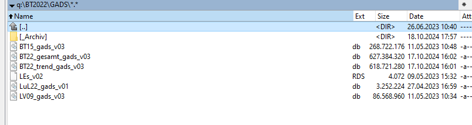
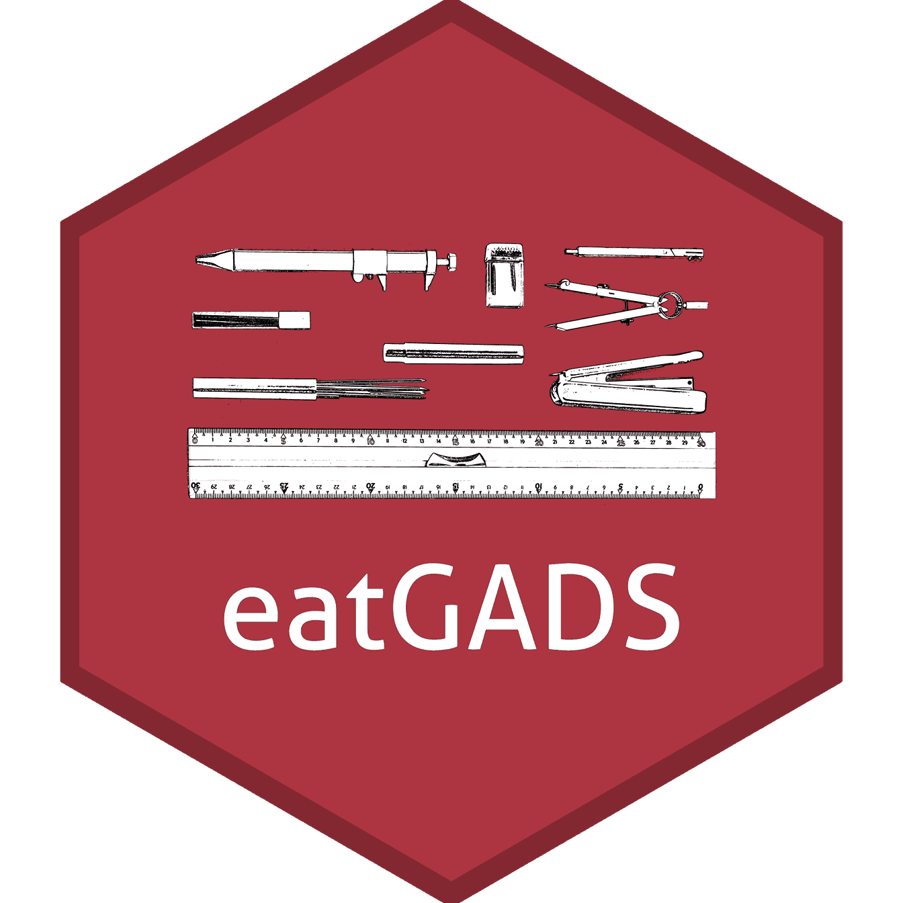

eatGADS - Datenbanknutzung
Benjamin Becker
Agenda
- Hintergrund
- Grundlegendes
- Übersicht Funktionalität
- Übung
- Praxis-Tipps
Hintergrund
eatGADS - Scope
- (teil-automatisierte) Datenaufbereitung
- Datenbankerstellung
- Datenbanknutzung
eatGADS - Scope
- (teil-automatisierte) Datenaufbereitung
- Datenbankerstellung
- Datenbanknutzung
Was ist ein GADS?
Genereller/Gesamt- Analyse-Datensatz
- Berichts-GADS
- nach-Berichts-GADS
- FDZ-GADS
Wie war es früher?
Datei-Format
- .Rdata
- .sav
Daten-Format
- long
- wide
GADS-Ordner
BT22 nach-Berichts-GADS
Warum machen wir das?
- .db (SQLite3) benötigt weniger Speicherplatz
- Zugriff auf Metadaten ohne Daten laden zu müssen
- Daten müssen für Analysen nicht gereshaped werden
- Variablenselektion beim Laden der Daten (weniger Arbeitsspeicher-Überlastung)
- flexibels Anwenden von Wertelabeln und Missingtags
Warum braucht ihr das?
- Alle BT-Daten seit BT18 intern nur noch als Datenbank verfügbar
- FDZ-Daten (SPSS, wide-Format) nutzbar, aber für IQB-relevante Analysen (z.B. mit eatRep) nicht optimal
eatGADS

Ressourcen
Grundlegendes
Daten in Datenbank
- numerische Variablen
- character Variablen (Zeichenfolgen)
Meta-Daten in Datenbank
varName- VariablennamevarLabel- Variablenlabelformat- SPSS-Formatvalue- numerischer WertvalLabel- Wertelabelmissings- Missingtags (missodervalid)data_table- Datenblatt
Meta-Daten in Datenbank
varName varLabel format
165 computer_age First use of computers F8.0
166 computer_age First use of computers F8.0
167 computer_age First use of computers F8.0
168 computer_age First use of computers F8.0
169 computer_age First use of computers F8.0
331 norms_f Subjective Norms - Parents Like Mathematics (T1) F8.0
332 norms_f Subjective Norms - Parents Like Mathematics (T1) F8.0
333 norms_f Subjective Norms - Parents Like Mathematics (T1) F8.0
334 norms_f Subjective Norms - Parents Like Mathematics (T1) F8.0
356 repeated Grade repetition F8.0
357 repeated Grade repetition F8.0
display_width labeled value valLabel missings data_table
165 NA yes 1 6 years old or younger valid noImp
166 NA yes 2 7-9 years old valid noImp
167 NA yes 3 10-12 years old valid noImp
168 NA yes 4 13 years old or older valid noImp
169 NA yes 5 Never valid noImp
331 NA yes 1 Strongly disagree valid noImp
332 NA yes 2 Disagree valid noImp
333 NA yes 3 Agree valid noImp
334 NA yes 4 Strongly agree valid noImp
356 NA yes 1 Did not repeat a grade valid noImp
357 NA yes 2 Repeated a grade valid noImpÜbliche BT-Struktur
noImpimpPVswgts
Übliche BT-Struktur
noImp- unimputierter Datensatz auf SuS-Ebene
- Quellen: SFB, EFB, Tracking
- 1 Zeile pro SuS
imp- imputierter Datensatz auf SuS-Ebene
- Quelle: Imputationen
- 1 Zeile pro Imputation x SuS (= 15 Zeilen pro SuS)
Übliche BT-Struktur
PVs- Kompetenzdaten
- Quelle: PV-Ziehung
- 1 Zeile pro Kompetenzbereich x Imputation x SuS (> 75 Zeilen pro SuS)
wgts- bereichs-/fachspezifische Gewichte
- Quelle: Gewichtsdaten
- 1 Zeile pro Kompetenzbereich x Imputation x SuS (> 75 Zeilen pro SuS)
Übersicht Funktionalität
Übersicht Funktionalität
namesGADS()- Variablennamen und DatenbankstrukturextractMeta()- Extraktion MetadatengetGADS()- Extraktion aus DBgetGADS_fast()- Extraktion aus DB mit CachinggetTrendGADS()- Extraktion Trend-GADSe aus DBextractData2()- Extraktion Daten
Beispiel-Datenbank
PISA-Plus Daten (FDZ Campus Files)
Datenbank-Struktur
Datenbankstruktur und Variablennamen inspizieren
$noImp
[1] "idstud" "idschool" "idclass" "schtype" "sameteach"
[6] "g8g9" "ganztag" "classsize" "repeated" "gender"
[11] "age" "language" "migration" "hisced" "hisei"
[16] "homepos" "books" "pared" "computer_age" "internet_age"
[21] "int_use_a" "int_use_b" "truancy_a" "truancy_b" "truancy_c"
[26] "int_a" "int_b" "int_c" "int_d" "instmot_a"
[31] "instmot_b" "instmot_c" "instmot_d" "norms_a" "norms_b"
[36] "norms_c" "norms_d" "norms_e" "norms_f" "anxiety_a"
[41] "anxiety_b" "anxiety_c" "anxiety_d" "anxiety_e" "selfcon_a"
[46] "selfcon_b" "selfcon_c" "selfcon_d" "selfcon_e" "worketh_a"
[51] "worketh_b" "worketh_c" "worketh_d" "worketh_e" "worketh_f"
[56] "worketh_g" "worketh_h" "worketh_i" "intent_a" "intent_b"
[61] "intent_c" "intent_d" "intent_e" "behav_a" "behav_b"
[66] "behav_c" "behav_d" "behav_e" "behav_f" "behav_g"
[71] "behav_h" "teach_a" "teach_b" "teach_c" "teach_d"
[76] "teach_e" "cognact_a" "cognact_b" "cognact_c" "cognact_d"
[81] "cognact_e" "cognact_f" "cognact_g" "cognact_h" "cognact_i"
[86] "discpline_a" "discpline_b" "discpline_c" "discpline_d" "discpline_e"
[91] "relation_a" "relation_b" "relation_c" "relation_d" "relation_e"
[96] "belong_a" "belong_b" "belong_c" "belong_d" "belong_e"
[101] "belong_f" "belong_g" "belong_h" "belong_i" "attitud_a"
[106] "attitud_b" "attitud_c" "attitud_d" "attitud_e" "attitud_f"
[111] "attitud_g" "attitud_h" "grade_de" "grade_ma" "grade_bio"
[116] "grade_che" "grade_phy" "grade_sci"
$PVs
[1] "idstud" "dimension" "imp" "value" Metadaten
Metadaten extrahieren
varName varLabel format
165 computer_age First use of computers F8.0
166 computer_age First use of computers F8.0
167 computer_age First use of computers F8.0
168 computer_age First use of computers F8.0
169 computer_age First use of computers F8.0
331 norms_f Subjective Norms - Parents Like Mathematics (T1) F8.0
332 norms_f Subjective Norms - Parents Like Mathematics (T1) F8.0
333 norms_f Subjective Norms - Parents Like Mathematics (T1) F8.0
334 norms_f Subjective Norms - Parents Like Mathematics (T1) F8.0
356 repeated Grade repetition F8.0
357 repeated Grade repetition F8.0
display_width labeled value valLabel missings data_table
165 NA yes 1 6 years old or younger valid noImp
166 NA yes 2 7-9 years old valid noImp
167 NA yes 3 10-12 years old valid noImp
168 NA yes 4 13 years old or older valid noImp
169 NA yes 5 Never valid noImp
331 NA yes 1 Strongly disagree valid noImp
332 NA yes 2 Disagree valid noImp
333 NA yes 3 Agree valid noImp
334 NA yes 4 Strongly agree valid noImp
356 NA yes 1 Did not repeat a grade valid noImp
357 NA yes 2 Repeated a grade valid noImpMetadaten
Metadaten extrahieren
all_meta <- extractMeta(db_path)
unique(all_meta[grep("grade", all_meta$varLabel), c("varName", "varLabel")]) varName varLabel
196 grade_bio School grade in biology (First school semester) (T1)
201 grade_che School grade in chemistry (First school semester) (T1)
206 grade_de School grade in German (First school semester) (T1)
211 grade_ma School grade in mathematics (First school semester) (T1)
216 grade_phy School grade in physics (First school semester) (T1)
221 grade_sci School grade in science (First school semester) (T1)GADSdat
GADSdat aus Datenbank ziehen
GADSdat
GADSdat aus Datenbank ziehen
List of 2
$ dat :'data.frame': 500 obs. of 3 variables:
..$ idstud : num [1:500] 1 2 3 4 5 6 7 9 10 11 ...
..$ schtype : num [1:500] 2 3 1 3 2 3 1 3 2 1 ...
..$ sameteach: num [1:500] 2 1 1 2 2 1 2 1 2 2 ...
$ labels:'data.frame': 6 obs. of 8 variables:
..$ varName : chr [1:6] "idstud" "sameteach" "sameteach" "schtype" ...
..$ varLabel : chr [1:6] "Student-ID" "Same math teacher in both school years" "Same math teacher in both school years" "School track" ...
..$ format : chr [1:6] "F8.0" "F8.0" "F8.0" "F8.0" ...
..$ display_width: num [1:6] NA NA NA NA NA NA
..$ labeled : chr [1:6] "no" "yes" "yes" "yes" ...
..$ value : num [1:6] NA 1 2 1 2 3
..$ valLabel : chr [1:6] NA "No" "Yes" "Gymnasium (academic track)" ...
..$ missings : chr [1:6] NA "valid" "valid" "valid" ...
- attr(*, "class")= chr [1:2] "GADSdat" "list"Daten
Daten extrahieren
'data.frame': 500 obs. of 3 variables:
$ idstud : num 1 2 3 4 5 6 7 9 10 11 ...
..- attr(*, "label")= chr "Student-ID"
$ schtype : num 2 3 1 3 2 3 1 3 2 1 ...
..- attr(*, "label")= chr "School track"
$ sameteach: chr "Yes" "No" "No" "Yes" ...
..- attr(*, "label")= chr "Same math teacher in both school years"Daten
Kompetenz-Daten extrahieren (Long-Format)
pisa_gads2 <- getGADS(db_path, vSelect = c("schtype", "sameteach", nam$PVs))
pisa_dat2 <- extractData2(pisa_gads2, labels2character = c("sameteach", "dimension"))
str(pisa_dat2)'data.frame': 7500 obs. of 6 variables:
$ idstud : num 1 1 1 1 1 1 1 1 1 1 ...
..- attr(*, "label")= chr "Student-ID"
$ schtype : num 2 2 2 2 2 2 2 2 2 2 ...
..- attr(*, "label")= chr "School track"
$ sameteach: chr "Yes" "Yes" "Yes" "Yes" ...
..- attr(*, "label")= chr "Same math teacher in both school years"
$ dimension: chr "ma" "rea" "sci" "ma" ...
..- attr(*, "label")= chr "Achievement dimension (math, reading, science)"
$ imp : num 1 1 1 2 2 2 3 3 3 4 ...
..- attr(*, "label")= chr "Number of imputation of plausible values"
$ value : num 0.1537 0.4391 0.1318 -0.0412 0.0199 ...
..- attr(*, "label")= chr "Plausible Value"Übung
Übung
- Welche Variablen zum Thema elterliche Bildung sind in der Beispiel-DB enthalten?
- Wie sind die Metadaten dieser Variablen strukturiert? (Wertelabel, Fehlende Werte, etc.)
- Zieht diese Variablen zusammen mit der Geschlechtervariable ‘gender’ aus der Datenbank und betrachtet ihre univariaten und bivariaten Verteilungen.
- Zieht nun diese drei Variablen zusammen mit dem Kompetenzschätzer (‘value’) aus der Datenbank.
- Können wir mithilfe der elterlichen Bildung die Mathematik-Kompetenz der Schüler:innen vorhersagen?
Praxis-Tipps
Warum machen wir das?
- .db (SQLite3) benötigt weniger Speicherplatz
- Zugriff auf Metadaten ohne Daten laden zu müssen
- Daten müssen für Analysen nicht gereshaped werden
- Variablenselektion beim Laden der Daten (weniger Arbeitsspeicher-Überlastung)
- flexibels Anwenden von Wertelabeln und Missingtags
Praxis-Tipps
Tip
Für Datenbanken, die auf den Netzlaufkwerken liegen, getGADS_fast() und getTrendGADS(..., fast = TRUE) nutzen.
Praxis-Tipps
Tip
Für konkrete Analysen passende Daten aus der Datenbank ziehen.
don’t:
- einfach mal alle Daten aus Datenbank ziehen und dann schauen, was man braucht
do
- anhand Meta-Daten Variablenauswahl treffen
- für verschiedene Analyselevel verschiedene Datensätze ziehen
Praxis-Tipps
Tip
extractData2() nutzen um Anwendung von Wertelabels und Missingstags bewusst zu steuern.
don’t
- alle Variablen als numerisch extrahieren und dann mühsam Wertelabel wiederherstellen
- alle Variablen als character extrahieren und dann Variablen mühsam in numerisch umwandeln
do
- vorab überlegen: Welche Variablen brauche ich numerisch, welche als character?
extractData2()nutzen um das umzusetzen
Danke für Eure Aufmerksamkeit!

Datenbanknutzung